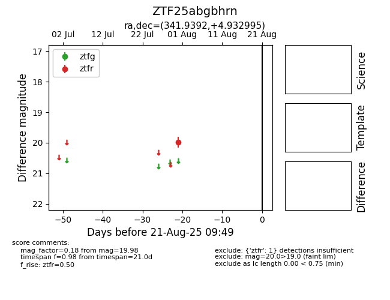

Target ZTF25abgbhrn at 2025-08-21 09:49, see:
FINK: fink-portal.org/ZTF25abgbhrn
Lasair: lasair-ztf.lsst.ac.uk/objects/ZTF25abgbhrn
ALeRCE: alerce.online/object/ZTF25abgbhrn
alt names
ZTF25abgbhrn (ztf,alerce)
coordinates:
equatorial (ra, dec) = (341.9392,+4.93299)
galactic (l, b) = (75.2583,-46.17573)
photometry
last ztfr=19.98
1 ztfr detections
